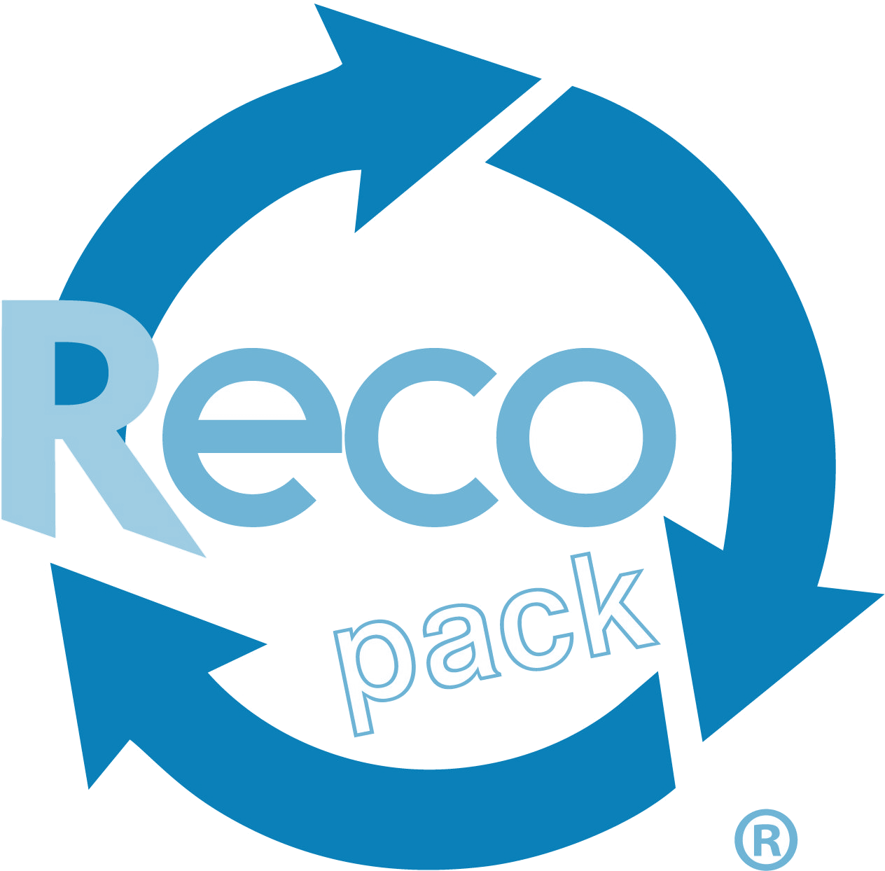
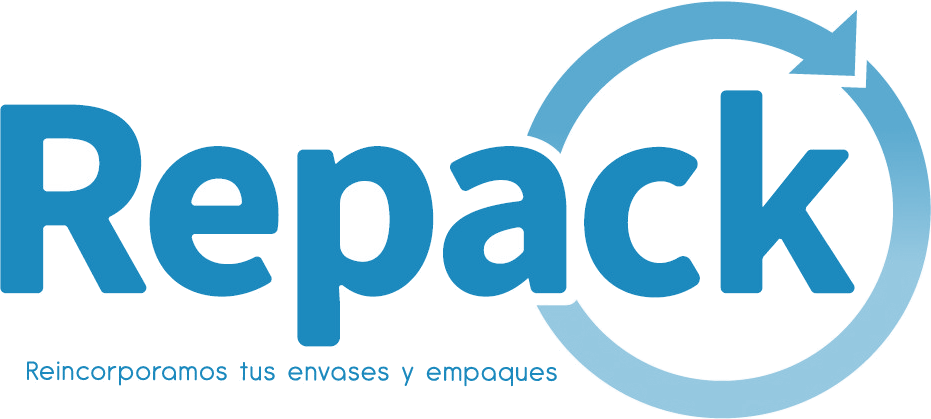

Este no es un software aislado de economía circular. En Circula convergen productores, planes, operadores, gestores, transformadores y consumidores finales en un modelo sencillo, intuitivo y diseñado para trazabilidad real.
Escalamos negocios a la sostenibilidad con el equivalente operativo de trazabilidad. Blockchain puro desde el productor hasta el consumidor final.
En este sitio convergen todos los actores de la cadena de la economía circular.
Reducimos la falta de estandarización probatoria entre actores y facilitamos evidencia confiable.
La misma infraestructura que resuelve REP prepara a la organización para ESG.
Línea base, conciliación, metas, reportes y cierre ANLA sobre una misma arquitectura.
REP resuelve el cumplimiento. ESG expande el valor sobre la misma infraestructura.
Quienes confían en Circula


¿De qué te sirve migrar a tecnología con software súper especializados si luego tus procesos tienen que verse transformados por tus clientes y proveedores? El problema no es solo digitalizar. El problema es integrar la cadena.
Ahora es mucho más fácil trabajar desde este modelo de economía circular basado en blockchain, porque Circula no digitaliza solo una empresa: integra productor, plan, operador, gestor, transformador, comercializador y consumidor final.
Circula impulsa la economía circular en Colombia con resultados medibles y verificables.
No se pudieron cargar las métricas en este momento.
} @else { @for (metric of metrics(); track metric.id) {{{ metric.label }}